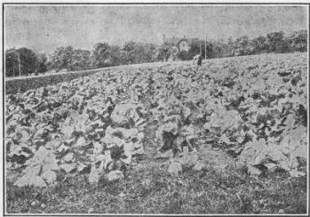
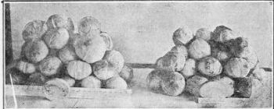

337. Classification Of Cabbage
Description
This section is from the book "Vegetable Gardening", by Ralph L. Watts. Also available from Amazon: Vegetable Gardening.
337. Classification Of Cabbage
The various methods of classification suggested are unsatisfactory. Market gardeners often speak of varieties as being early, midseason and late. This system of grouping, however, means little, for the time of maturity is largely a matter of how early the crop is started. Jersey Wakefield is generally recognized as an early variety, but some home growers desiring pointed heads and high quality sow the seed in July and August, so that the heads will not mature until October or November, and then the product becomes late cabbage. Succession is usually regarded as a midseason variety, but by tarting it early under glass marketable heads may be secured in the North soon after July 1, while later sowings will not make solid cabbage until freezing weather. A system of grouping suggested by C. L. Allen is the most valuable. ("Cabbage, Cauliflower and Allied Vegetables," p. 54.) The names of certain well-known and usually old varieties are used to indicate the groups, as (1) Wakefield and Winningstadt Group, (2) Flat Dutch or Drumhead Group, (3) Savoy Group, (4) Red Cabbage Group, (5) Danish Ballhead Group, (6) Alpha Group. (7) The Volga group, which is not included in the Allen grouping, is here added.
Fig. 66. a field of jersey wakefield cabbage.
338. Wakefield And Winningstadt Group
Jersey Wakefield
Jersey Wakefield is an old English variety introduced on Long Island about 50 years ago. In 1886, Peter Henderson wrote, "It is universally considered the best early cabbage in cultivation." C. L. Allen, writing probably 15 years later, stated, "It has no superior." Practically all of the old writers praise this variety, and market gardeners today can find nothing better as a first early cabbage. Judging from descriptions and illustrations in the old books, the type of head as originally grown in England and in this country was more blunt or obtuse at the apex than the average strain now sold by seedsmen. It seems that in the attempt to secure earliness the seed growers have encouraged the conical form, which is now typical of the best strains. Solidity of head, earliness, superior quality and scant outside foliage are the chief merits of this variety. The heads also average larger in size than some other early varieties cultivated less extensively. It is popular among home gardeners, and is unquestionably the leading early variety grown by American market gardeners (Figure 66). Many strains or subvarieties have been introduced under new names. Early Race Horse and Wood's Extra Early are examples of superior strains tested at the Pennsylvania station.
Charleston Wakefield
Charleston Wakefield is supposed to be a strain of the Jersey Wakefield, producing heads a third larger and requiring from three days to a week longer to mature. The heads are not so pointed and the outside leaves are larger. The edible and shipping qualities are good. It is considered the most valuable variety to follow Jersey Wakefield when a pointed cabbage is wanted.
Winningstadt Heads
Winningstadt Heads are much more pointed than those of Jersey Wakefield, but about the same size, although those grown at the Pennsylvania station are considerably smaller. Because of solidity of heads, tenderness and fine quality, this variety is a general favorite among home gardeners. It lacks shipping qualities, and is seldom planted for commercial purposes, except in a limited way to supply a special trade.
Early York
Early York is of interest historically. It is one of the best-known varieties, is very largely cultivated in England and was a general favorite in this country before the introduction of Jersey Wakefield. The heads differ from the Wakefield type in being oval or reversed-cone shape, oblong, about twice as long as broad, much smaller than Wakefield and not quite so compact. The variety is now seldom planted in this country.
Express
Although this variety has been widely cataloged by seedsmen for many years, it seems to be a carefully bred strain of Jersey Wakefield. There is no question about its being earlier than the average strain of Jersey Wakefield, but the differences in leaf and head are not sufficient to make it a distinct new variety. It is apparently the same as Early Race Horse and Wood's Extra Early.
339. Flat Dutch Or Drumhead Group
Of the flat cabbages Early Spring is regarded as the earliest and most valuable variety. Some markets prefer this type to the conical, and if earliness is the most important factor, Early Spring is the best selection of a flat cabbage that can be made. Growers should bear in mind, however, that this variety is about a week later than Jersey Wakefield and probably a trifle later than Charleston Wakefield. The outer leaves of the head do not become detached readily with rough handling; this is one of the reasons why some market gardeners prefer it to conical sorts. Early Spring is widely planted. The heads are solid and large for the time of maturity.
Early Summer
This variety is a third larger than Early Spring, but attains a marketable size three or four days to a week later. It is one of the most valuable midseason varieties. The heads are large and solid and the outside leaves comparatively small in the best strains.
Succession
A well-known American seedsman says of this variety: "It is the finest cabbage in existence today; whether for medium early, main crop, or later use, it has no equal." It is generally admitted to be a remarkably well-bred cabbage, for large fields often show practically no variation. The heads are larger than Early Summer, and the plants are certain headers, even in moderately fertile soils, provided they have been set at the proper time. Succession is especially valuable for growers of late cabbage whose soils are not rich enough to make a satisfactory crop of late varieties. Other varieties of similar character are Early Flat Dutch, All Head and All Seasons.
Surehead
Surehead, which was introduced over 30 years ago, is desirable as a late cabbage and possesses some value over Flat Dutch (of which it is a strain) for planting rather late in the season and in soils lacking the necessary fertility for the very late sorts. It often heads satisfactorily when the latest varieties fail. When there is any uncertainty, however, concerning the producing power of the land selected, the only safe course is to fertilize and manure as heavily as possible and plant Succession.
Flat Dutch
Flat Dutch is a standard late variety grown largely in many sections. It requires a long season and a rich soil. The Drumhead and many other varieties cataloged by seedsmen are practically identical.
Autumn King
Autumn King is a superior late variety planted in some sections. It possesses certain characters in leaf and head that make it fairly distinct from the Flat Dutch type.
Houser Originated Near Harrisburg, Pa
It is probably the latest of all cultivated varieties, and should be started at least two weeks in advance of standard late varieties. The heads are much more rounded than the well-known flat cabbages and it might probably be placed in a distinct group. It was introduced in 1897. The originator claims for it large size, solidity of head, fine texture, small heart, excellent flavor and good keeping qualities.
340. Savoy Group. Varieties Of Savoy Cabbage
Several varieties of Savoy cabbages are cataloged by American seedsmen, but they vary little in character. The leading variety perhaps is the Drumhead Savoy. These cabbages thrive best during the cool weather of the fall months, and are seldom grown as an early or intermediate crop. When grown under proper conditions, the flavor is considered more delicate than that of any other cabbage. The demand is limited, however, and large areas should not be planted unless there is assurance of a satisfactory market.
341. The Red Cabbage Group
Red Drumhead
Red Drumhead is a standard variety, and probably an important variation of the Large Red Dutch.
Mammoth Rock Red
Mammoth Rock Red heads larger than the Red Drumhead. Varieties of this group should not be extensively planted without a full knowledge of market conditions, for the demand is very limited compared with green varieties.
Fig. 67. two strains of danish ball head cabbage.
342. The Alpha Group
Alpha is described by Allen. (Allen, C. L., "Cabbage, Cauliflower and Allied Vegetables," p. 67.) The heads are very small, solid and earlier than Jersey Wakefield.
St. John Day
This little cabbage, which reaches maturity a few days or a week in advance of Jersey Wakefield, might be placed in a separate group with a few other varieties of similar character. The heads are smaller than Wakefield, round and very hard. The outside leaves are small and permit close planting, For this reason the variety is valuable for companion cropping with lettuce or other vegetables. It should be plantea in very rich soil to secure heads of desirable size.
Miniature Marrow
Miniature Marrow is similar to St. John Day. It is planted to a limited extent, but seldom by commercial growers.
343. The Danish Ball Head Group
The Danish Ball Head is variously known as Emperor, Holland, Hollander, German Export, Armager and Dutch Winter (Figure 67). It is grown almost exclusively for winter use in Denmark, and was introduced into the United States over 20 years ago. The variety has become exceedingly popular as a winter cabbage because of its superb keeping qualities. It is grown extensively in New York and other northern states, where the cabbage industry has developed to a marked degree. For burying or storage it has no equal and is practically the only variety held for mid and late winter sales. There is considerable varietal variation in the type, but the heads are nearly round, very hard and solid and usually range from 3 to 8 pounds in weight, although larger heads are common. A 4-pound head is a good weight, and if all the plants in a field average 4 pounds the crop is considered excellent. This group is not adapted to warm climates or to certain types of soil. A satisfactory crop is seldom if ever grown on sandy soils. Experiments at the Pennsylvania station indicate that it is not at home on limestone soils. Early sowing is important to secure full yields.
Danish Round Head
Danish Round Head is a strain of the Danish Ball Head which ripens from ten days to two weeks earlier, and is therefore valuable for planting when it is too late for setting the Danish Ball Head.
344. The Volga Group
Volga (Figure 68) is the only variety belonging to the group. It is highly recommended by many seedsmen and some growers are enthusiastic concerning its merits. The heads are fairly solid, roundish, conical, about the size of Succession. The leaves are crumpled, particularly at the base. It matures with Succession, is true to type, fine in texture and has comparatively few outside leaves. The stems are short and the plants are fairly resistant to disease. Volga is very interesting, but although it has many friends, it is doubtful whether it will ever be as largely planted as many other standard varieties.
Continue to:
Tags
plants, crops, gardening, cultivated, harvesting, food ,greenhouses, fertiliser, vegitables